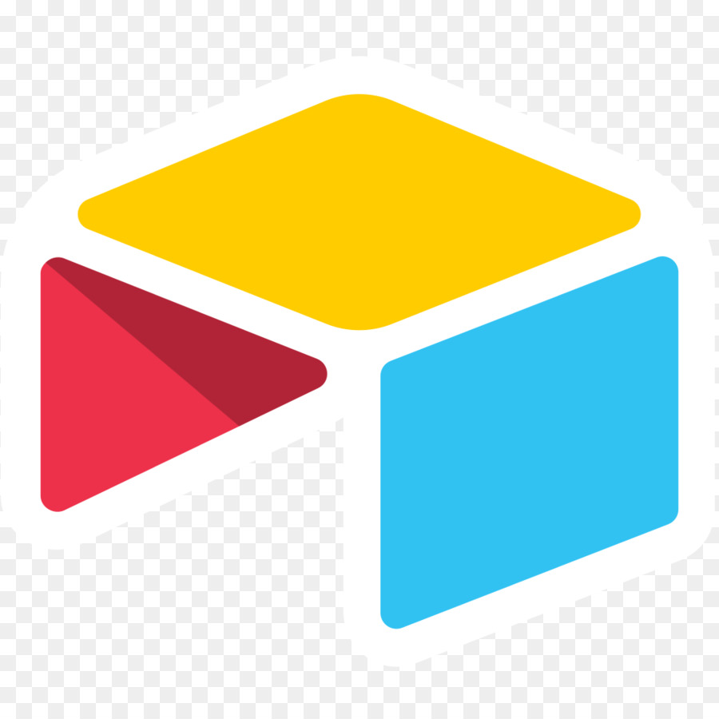

06 — Équipe
Les visages
derrière Kyrro.
Hubert Borrewater
UX UI DesignerClément Piot
Founder & AI Automation Specialist
Studio · Automatisation & IA · Lille
Ce qui fait qu'un outil sert vraiment, c'est la rencontre entre le métier, le design et la technologie.
On comprend votre métier avant de toucher à un outil.
Avant de proposer la moindre solution, on prend le temps de comprendre comment vous travaillez, ce qui vous fait perdre du temps, et où se cachent les vrais leviers. Parce qu'un outil mal pensé, même avec la meilleure technologie, ne sert à rien.
Vos outils méritent autant d'attention que votre site vitrine.
Chaque interface qu'on livre est pensée comme un produit fini : claire, agréable, et conçue pour ceux qui s'en servent au quotidien.
On automatise vos tâches répétitives, et on intègre l'IA là où elle fait la différence.
On identifie les tâches qui vous coûtent du temps chaque semaine, et on construit les workflows qui les prennent en charge à votre place. L'IA intervient là où elle apporte une vraie valeur : trier, résumer, générer, analyser.
De l'audit aux outils internes les plus complexes, on choisit toujours la solution la plus adaptée à votre réalité.
CRM, back-office, portails clients, dashboards… On conçoit les outils qui vous manquent pour piloter votre activité au quotidien, taillés exactement à votre façon de travailler.
On connecte vos outils existants pour qu'ils communiquent entre eux et que les tâches répétitives disparaissent. Devis qui se génèrent tout seuls, données qui se synchronisent, notifications qui partent au bon moment — tout ce qui peut tourner sans vous.
On intègre l'IA dans vos process et vos outils, là où elle vous fait vraiment gagner du temps : trier des emails, résumer des réunions, qualifier des leads, traiter des documents, générer des contenus. Pas d'IA gadget — de l'IA qui produit un résultat mesurable.
Avant de construire quoi que ce soit, on prend le temps d'analyser votre fonctionnement actuel pour identifier où vous perdez du temps, où l'automatisation a du sens, et où l'IA peut vraiment vous aider. Vous repartez avec une feuille de route claire, même si vous ne travaillez pas avec nous ensuite.
Quand vous avez besoin d'un site vitrine ou d'une landing page bien designée et rapide à mettre en ligne, on s'en occupe aussi. Avec le même soin du détail que pour le reste.
Une méthode posée, des points de validation réguliers, et un accompagnement qui ne s'arrête pas à la livraison.
On apprend à connaître votre business avant tout le reste.
On commence toujours par un échange approfondi pour comprendre comment vous travaillez, quels sont vos outils existants, et où se trouvent vos vrais points de friction. À la fin de cette phase, on sait exactement ce qu'on va construire — et surtout pourquoi.
On dessine, on construit, on vous montre.
On conçoit la solution sur-mesure et on la construit étape par étape, en vous la présentant régulièrement. Vous voyez l'outil prendre forme et vous l'orientez avec nous.
Un projet livré, ce n'est pas un projet terminé.
Une fois l'outil en production, on reste à vos côtés pour l'ajuster, le faire évoluer et l'enrichir au fil du temps. Vos besoins changent, votre activité grandit, et votre outil doit suivre — sans que vous ayez à tout recommencer à zéro.
Ce qui compte, ce n'est pas la stack, c'est ce qu'on en fait. On choisit toujours les outils les plus adaptés à votre besoin — voici ceux qu'on maîtrise au quotidien.

Airtable Bases de données et gestion de contenus Webflow
Sites vitrines et landings
Webflow
Sites vitrines et landings
 Claude
IA appliquée et traitement intelligent
Claude
IA appliquée et traitement intelligent
On prend le temps d'écouter votre besoin avant tout le reste.